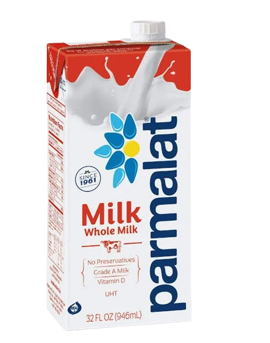
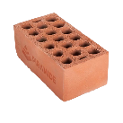
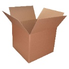
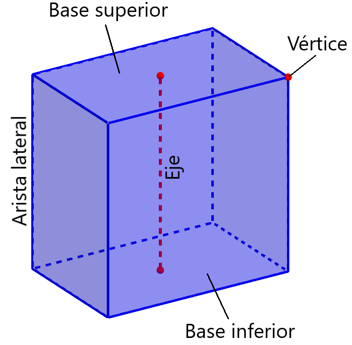
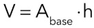

Un prisma es un sólid o geométrico que tiene dos bases iguales y paralelas, y el resto de sus caras son rectángulos.
Imagina una caja de zapatos, un ladrillo o un envase rectangular de leche. Todos tienen una forma parecida: sus caras laterales son planas y sus dos bases son idénticas.

VOLUMEN DE PRISMAS
¿Qué es un prisma?
En términos sencillos:
Un prisma es como una figura plana (triángulo, cuadrado, rectángulo, etc.) que se “alarga” en una dirección.
Partes de un prisma
Para comprender mejor un prisma, debemos identificar sus elementos principales:
- Base: Es la figura geométrica que se repite. Puede ser un triángulo, cuadrado, rectángulo, pentágono, etc.
- Altura (h): Es la distancia perpendicular entre las dos bases. Representa cuánto “se extiende” el prisma.
- Caras laterales: Son los rectángulos que unen una base con la otra.
- Aristas: Son los bordes del prisma, es decir, donde se unen dos caras.
- Vértices: Son los puntos donde se encuentran tres aristas.

Fórmula del Volumen del Prisma
Para calcular el volumen de un prisma, necesitamos saber cuánta superficie ocupa su base y cuánto se extiende esa base en altura.

Área de la base (Aᵦ) → depende de la forma de la base (triángulo, cuadrado, rectángulo, etc.)
Altura (h) → es la distancia entre las dos bases.
Obra publicada con Licencia Creative Commons Reconocimiento Compartir igual 4.0